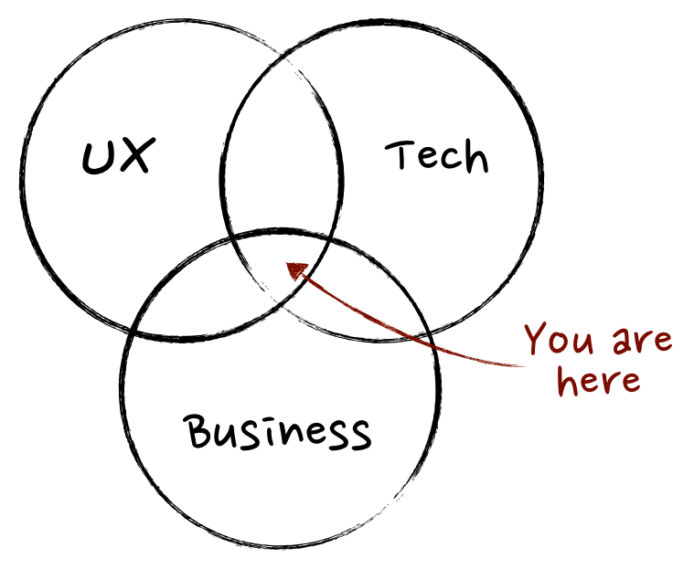

Product Management
What is Product Management?
“To discover a product that is valuable, usable and feasible” -Marty Cagan, Inspired
Product Management entails leading the ideation, development, and launch of new products.
It is typically associated with tech products and services, including hardware and software products.

Individual experience in this field
Verizon, Summer Internship, Product Management
Nu Skin, Product and Brand Manager, Nutrition and Supplements
Anticipated contributions in this field
Create products that make a difference in the lives of others.
Improve existing processes for my companies to improve industry efficiency.